from scipy.stats import multivariate_normal
from sklearn.linear_model import LogisticRegression
from sklearn.model_selection import train_test_split
from sklearn.preprocessing import StandardScaler
from sklearn.metrics import precision_recall_curve
from matplotlib import pylab as plt
import matplotlib as mpl
import numpy as np
import pandas as pd
import seaborn as sns
URL_DATOS = ('https://github.com/INGEOTEC/AprendizajeComputacional/'
'releases/download/datos-v1')
PALETTE = mpl.cm.Paired5 Teoría de Decisión Bayesiana
El objetivo de la unidad es analizar el uso de la teoría de la probabilidad para la toma de decisiones. En particular el uso del teorema de Bayes para resolver problemas de clasificación y su uso para tomar la decisión que reduzca el riesgo. La unidad termina aplicando la teoría a una decisión de política pública, la focalización de un programa social, donde incluir a un hogar que no lo necesita y excluir a uno que sí lo necesita tienen costos distintos.
Paquetes usados
5.1 Introducción
Al diseñar una solución a un problema particular lo mejor que uno puede esperar es tener una certeza absoluta sobre la respuesta dada. Por ejemplo, si uno diseña un algoritmo que ordene un conjunto de números uno espera que ese algoritmo siempre regrese el orden correcto independientemente de la entrada dada, es más, un algoritmo de ordenamiento que en ocasiones se equivoca se consideraría de manera estricta erróneo.
Sin embargo, existen problemas cuyas características, como incertidumbre en la captura de los datos, variables que no se pueden medir, entre otros factores hacen que lo mejor que se puede esperar es un algoritmo exacto y preciso. Todos los problemas que trataremos en Aprendizaje Computacional caen dentro del segundo escenario. El lenguaje que nos permite describir de manera adecuada este tipo de ambiente, que se caracteriza por variables aleatorias es el de la probabilidad. En el capítulo de Rendimiento (Capítulo 2) se describió cómo medir qué tan bien (o mal) decide un algoritmo. En esta unidad se describe cómo construir un clasificador que decide con base en probabilidades y cómo ajustar la decisión cuando los errores tienen costos diferentes.
5.2 Probabilidad
En Sección 1.6 se describió que el punto de inicio de aprendizaje supervisado es el conjunto \(\mathcal D = \{ (x_1, y_1), \ldots, (x_N, y_N )\}\), donde \(x_i \in \mathbb R^d\) corresponde a la \(i\)-ésima entrada y \(y_i\) es la salida asociada a esa entrada; este conjunto tiene el objetivo de guiar un proceso de búsqueda para encontrar un método que capture la relación entre \(x\) y \(y\).
Se pueden tratar las variables \(x\) y \(y\) de \(\mathcal D\) como dos variables aleatorias \(\mathcal X\) y \(\mathcal Y\), respectivamente; en este dominio el problema de identificar la respuesta (\(\mathcal Y\)) dada la entrada (\(\mathcal X\)) se puede describir como encontrar la probabilidad de observar \(\mathcal Y\) habiendo visto \(\mathcal X\), es decir, \(\mathbb P(\mathcal Y \mid \mathcal X)\).
5.2.1 Ejemplos
Por ejemplo, en un problema de clasificación binaria se tiene que la respuesta tiene dos posibles valores, e.g., \(\mathcal Y=\{0, 1\}\). Entonces el problema es saber si dada una entrada \(x\) el valor de la respuesta es \(1\) o \(0\). Utilizando probabilidad la pregunta quedaría como conocer la probabilidad de que \(\mathcal Y=1\) o \(\mathcal Y=0\) cuando se observa \(\mathcal X=x\), es decir, encontrar \(\mathbb P(\mathcal Y=1 \mid \mathcal X=x)\) y compararlo contra \(\mathbb P(\mathcal Y=0 \mid \mathcal X=x)\). Tomando en cuenta estos valores de probabilidad se puede concluir el valor de la salida dado que \(\mathcal X=x\). También está el caso que las probabilidades sean iguales, e.g., si \(\mathbb P(\mathcal Y=1 \mid \mathcal X=x)=\mathbb P(\mathcal Y=0 \mid \mathcal X=x)=0.5\) o que su diferencia sea muy pequeña y entonces se toma la decisión de desconocer el valor de la salida.
Para el caso de regresión (\(y \in \mathbb R\)), el problema se puede plantear asumiendo que \(\mathcal Y\) proviene de una distribución particular cuyos parámetros están dados por la entrada \(\mathcal X\). Por ejemplo, en regresión lineal se asume que \(\mathcal Y\) proviene de una distribución Gaussiana con parámetros dados por \(\mathcal X\), es decir, \(\mathbb P(\mathcal Y \mid \mathcal X=x) = \mathcal N(g(x) + \epsilon, \sigma^2),\) donde los parámetros de la función \(g\) son identificados mediante \(\mathcal X\) y \(\epsilon \sim \mathcal N(0, \sigma^2)\) es el error con media cero y desviación estándar \(\sigma\). Con estas condiciones la salida \(y\) es \(\mathbb E[\mathcal Y \mid \mathcal X=x];\) asumiendo que esa variable se distribuye como una normal entonces \(\mathbb E[\mathcal Y \mid \mathcal X=x]= \mathbb E[g(x) + \epsilon]=g(x) + \mathbb E[\epsilon]=g(x).\)
5.3 Teorema de Bayes
El problema se convierte en cómo calcular \(\mathbb P(\mathcal Y \mid \mathcal X)\), lo cual se puede realizar mediante el Teorema de Bayes el cual se deriva a continuación.
La probabilidad conjunta se puede expresar como \(\mathbb P(\mathcal X, \mathcal Y)\), esta probabilidad es conmutativa por lo que \(\mathbb P(\mathcal X, \mathcal Y)=\mathbb P(\mathcal Y, \mathcal X).\) En este momento se puede utilizar la definición de probabilidad condicional que es \(\mathbb P(\mathcal Y, \mathcal X)=\mathbb P(\mathcal Y \mid \mathcal X) \mathbb P(\mathcal X).\) Utilizando estas ecuaciones el Teorema de Bayes queda como
\[ \mathbb P(\mathcal Y \mid \mathcal X) = \frac{ \mathbb P(\mathcal X \mid \mathcal Y) \mathbb P(\mathcal Y)}{\mathbb P(\mathcal X)}, \tag{5.1}\]
donde al término \(\mathbb P(\mathcal X \mid \mathcal Y)\) se le conoce como verosimilitud, \(\mathbb P(\mathcal Y)\) es la probabilidad a priori y \(\mathbb P(\mathcal X)\) es la evidencia.
Es importante mencionar que la evidencia se puede calcular mediante la probabilidad total, es decir:
\[ \mathbb P(\mathcal X) = \sum_{y \in \mathcal Y} \mathbb P(\mathcal X \mid \mathcal Y=y) \mathbb P(\mathcal Y=y). \tag{5.2}\]
5.3.1 Problema Sintético
Con el objetivo de entender el funcionamiento del Teorema de Bayes, esta sección presenta un problema sintético. El procedimiento es el siguiente, primero se generarán los datos, los cuales van a ser tres nubes de puntos generadas mediante tres distribuciones gaussianas multivariadas. Con estas tres nubes de puntos, se utilizará el Teorema de Bayes (Ecuación 5.1) para clasificar todos los puntos generados.
El primer paso es definir las tres distribuciones gaussianas multivariadas, para este objetivo se usa la clase multivariate_normal como se muestra a continuación.
p1 = multivariate_normal(mean=[5, 5],
cov=[[4, 0], [0, 2]])
p2 = multivariate_normal(mean=[1.5, -1.5],
cov=[[2, 1], [1, 3]])
p3 = multivariate_normal(mean=[12.5, -3.5],
cov=[[2, 3], [3, 7]])Los parámetros de la distribución son el vector de medias y la matriz de covarianza, para la primera distribución estos corresponden a \(\mathbf \mu = [5, 5]^\intercal\) y
\[ \Sigma = \begin{pmatrix} 4 & 0 \\ 0 & 2 \\ \end{pmatrix}. \]
Una vez definidas las distribuciones podemos generar números aleatorios de las mismas, en el siguiente código se generan 1000 vectores aleatorios de las tres distribuciones.
X_1 = p1.rvs(size=1000)
X_2 = p2.rvs(size=1000)
X_3 = p3.rvs(size=1000)Para graficar estas tres nubes de puntos se puede hacer uso del siguiente código, donde se hace uso de la librería pandas y seaborn para generar la gráfica.
D = np.concatenate((X_1, X_2, X_3))
clase = [1] * 1000 + [2] * 1000 + [3] * 1000
D = np.concatenate((D, np.atleast_2d(clase).T), axis=1)
df = pd.DataFrame(D, columns=['x', 'y', 'clase'])
_ = sns.relplot(data=df, kind='scatter', x='x',
y='y', hue='clase') 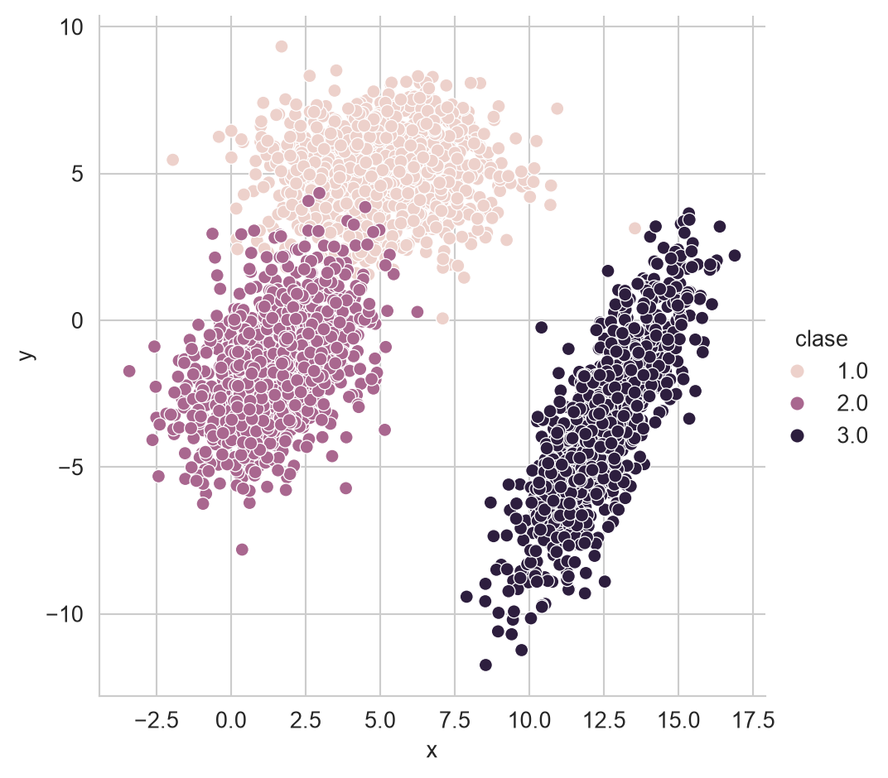
El resultado del código anterior se muestra en la Figura 5.1, donde se puede visualizar las tres nubes de puntos, donde el color indica la clase.
TipActividad
Generar una nube de puntos similar a la que se muestra en la Figura 5.2. Observar que ambos ejes de la figura están en el rango \([-20, 20].\)
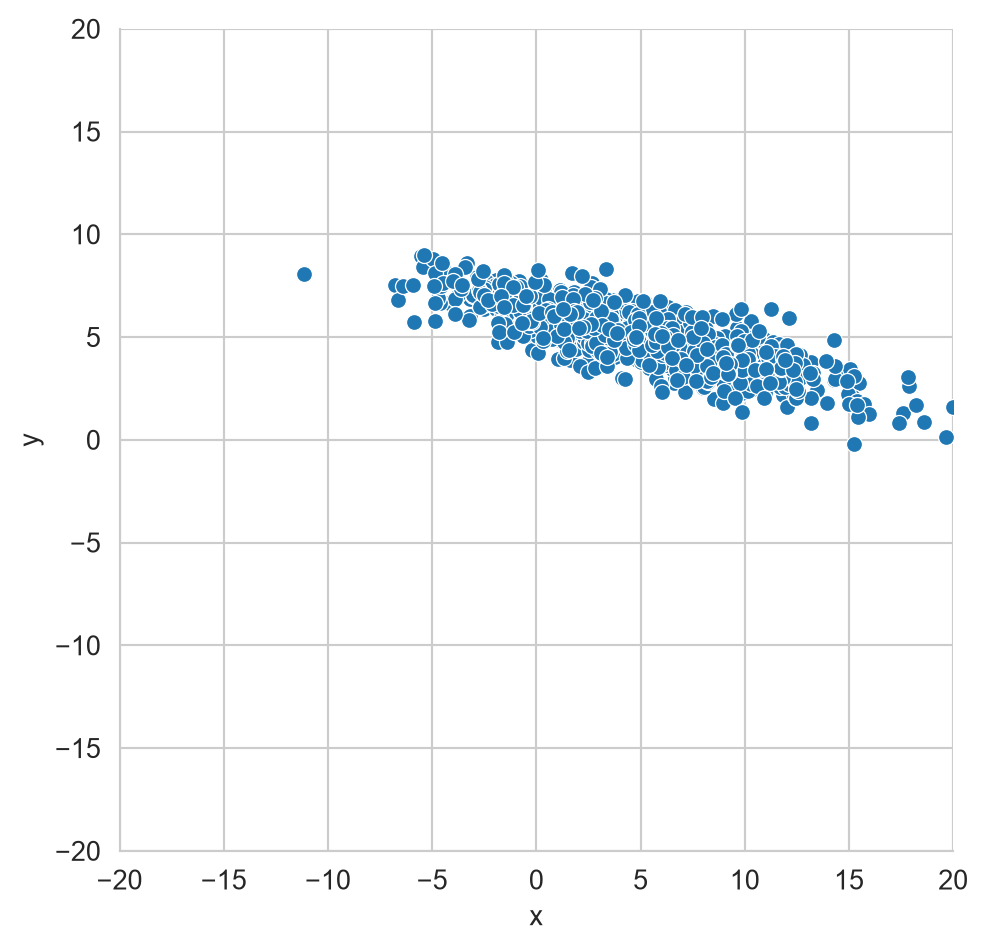
5.3.2 Predicción
En esta sección se describe el primer ejemplo del paso 4 de la metodología general (ver Sección 1.4) de los algoritmos de aprendizaje supervisado. El algoritmo \(f\) mencionado en la metodología corresponde en este ejemplo al uso del Teorema de Bayes y las distribuciones p1, p2 y p3 y los correspondientes valores a priori.
Quitando la evidencia del Teorema de Bayes (Ecuación 5.1) se observa que \(\mathbb P(\mathcal Y \mid \mathcal X) \propto \mathbb P(\mathcal X \mid \mathcal Y) \mathbb P(\mathcal Y)\). En el ejemplo creado se observa que \(\mathbb P(\mathcal Y=1) = \frac{1000}{3000},\) las otras probabilidades a priori tienen el mismo valor, es decir, \(\mathbb P(\mathcal Y=2) = \mathbb P(\mathcal Y=3) = \frac{1}{3}.\)
La verosimilitud está definida en las variables p1, p2 y p3; en particular en la función pdf, es decir, \(\mathbb P(\mathcal X \mid \mathcal Y=1)\) es p1.pdf, \(\mathbb P(\mathcal X \mid \mathcal Y=2)\) corresponde a p2.pdf y equivalentemente p3.pdf es la verosimilitud cuando \(\mathcal Y=3.\)
Utilizando esta información \(\mathbb P(\mathcal X \mid \mathcal Y) \mathbb P(\mathcal Y)\) se calcula de la siguiente manera.
X = np.concatenate((X_1, X_2, X_3))
posterior = (np.vstack([p1.pdf(X),
p2.pdf(X),
p3.pdf(X)]) * 1 / 3).TLa evidencia (Ecuación 5.2) es un factor normalizador que hace que las probabilidades sumen a uno, el siguiente código calcula la evidencia, \(\mathbb P(\mathcal X)\)
evidencia = posterior.sum(axis=1)Finalmente, \(\mathbb P(\mathcal Y \mid \mathcal X)\) se obtiene normalizando \(\mathbb P(\mathcal X \mid \mathcal Y) \mathbb P(\mathcal Y)\) que se puede realizar de la siguiente manera.
posterior = posterior / np.atleast_2d(evidencia).TLa clase corresponde a la probabilidad máxima, en este caso se compara la probabilidad de \(\mathbb P(\mathcal Y=1 \mid \mathcal X),\) \(\mathbb P(\mathcal Y=2 \mid \mathcal X)\) y \(\mathbb P(\mathcal Y=3 \mid \mathcal X)\); y la clase es aquella que tenga mayor probabilidad. El siguiente código muestra este procedimiento, donde el primer paso es crear un arreglo para mapear el índice a la clase. El segundo paso es seleccionar la probabilidad máxima y después transformar el índice de la probabilidad máxima a la clase.
clase = np.array([1, 2, 3])
indice = posterior.argmax(axis=1)
prediccion = clase[indice]En la variable prediccion se tienen las predicciones de las clases, ahora se analizará si estas predicciones corresponden con la clase original que fue generada. Por la forma en que se generó X se sabe que los primeros 1000 elementos pertenecen a la clase \(1\), los siguientes 1000 a la clase \(2\) y los restantes a la clase \(3\). A continuación se muestra el arreglo y que tiene esta estructura.
y = np.array([1] * 1000 + [2] * 1000 + [3] * 1000)Teniendo las predicciones y los valores reales de las clases, lo que se busca es visualizar los ejemplos que no fueron clasificados de manera correcta, el siguiente código muestra este procedimiento.
_ = [dict(x=x, y=y, error=error)
for (x, y), error in zip(X, y != prediccion)]
df_error = pd.DataFrame(_)
_ = sns.relplot(data=df_error, kind='scatter',
x='x', y='y', hue='error')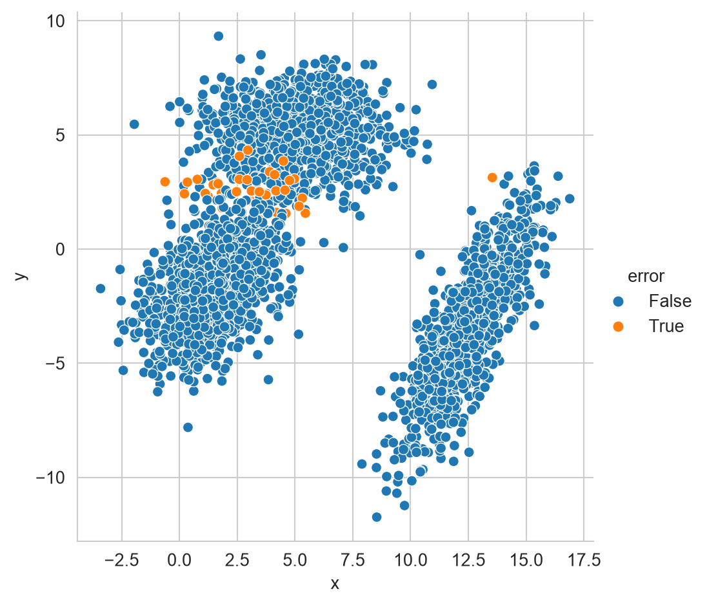
La Figura 5.3 muestra todos los datos generados, en color azul se muestran aquellos datos que fueron correctamente clasificados y en color naranja (error igual a True) se muestran aquellos ejemplos donde el proceso de clasificación cometió un error.
5.4 Error de Clasificación
Este ejemplo ayuda a ilustrar el caso donde, aun teniendo el modelo perfecto, este produce errores al momento de usarlo para clasificar. Se podía asumir que este error en clasificación iba a ocurrir desde el momento que las nubes de puntos de la clase 1 y 2 se traslapan como se observa en la Figura 5.1.
El ejemplo sirve también para ilustrar el quinto paso de la metodología general (ver Sección 1.4) de los algoritmos de aprendizaje supervisado que corresponde a medir el rendimiento de un modelo. Primero se empieza por medir el error promedio utilizando el siguiente código; donde el error es \(0.0123\).
error = (y != prediccion).mean()La siguiente pregunta es conocer cuánto varía este error si se vuelve a realizar el muestreo de las distribuciones p1, p2 y p3. Una manera de conocer esta variabilidad de la medición del error es calculando su error estándar.
El error estándar (ver Sección A.1) está definido como \(\sqrt{\mathbb V(\hat \theta)}\) donde \(\hat \theta\) es el valor estimado, en este caso el error. El error es una variable aleatoria que sigue una distribución de Bernoulli, dado que para cada ejemplo tiene dos valores \(1\) que indica que en ese ejemplo el clasificador se equivocó y \(0\) cuando se predice la clase correcta. El parámetro de la distribución Bernoulli, \(p\), se estima como la media entonces el error estándar de \(p\) corresponde al error estándar de la media (ver Sección A.1.1), i.e., \(\sqrt{\mathbb V(\hat p)} = \sqrt{\frac{\hat p (1 - \hat p)}{N}},\) dado que la varianza \(\sigma^2\) de una distribución Bernoulli con parámetro \(p\) es \(p (1 - p)\). Para el ejemplo analizado el error estándar se calcula con la siguiente instrucción; teniendo un valor de \(0.0020\).
se_formula = np.sqrt(error * (1 - error) / 3000)Aunque el error estándar del parámetro \(p\) de la distribución Bernoulli sí se puede calcular analíticamente, se usará la técnica de Bootstrap (ver Sección A.2) para ejemplificar aquellas estadísticas donde no se puede. Esta técnica requiere generar \(B\) muestras de \(N\) elementos con remplazo de los datos. En este caso los datos son los errores entre y y prediccion. Siguiendo el método descrito en el apéndice (Sección A.2) se generan los índices para generar la muestra como se observa en la primera línea del siguiente código. En la segunda línea se hacen las \(B\) repeticiones las cuales consisten en calcular \(\hat p\). Se puede observar cómo se usa directamente y y prediccion junto con el arreglo de índices s para calcular la media del error. Finalmente se calcula la desviación estándar de B (tercera línea) y ese valor corresponde al error estándar.
S = np.random.randint(y.shape[0], size=(500, y.shape[0]))
B = [(y[s] != prediccion[s]).mean() for s in S]
se = np.std(B)El error estándar, se, calculado es \(0.0021\).
El error estándar corresponde a la distribución que tiene la estimación del parámetro de interés; mediante la técnica de muestreo bootstrap se simuló esta distribución y con el siguiente código se puede observar su histograma, donde los datos estimados se encuentran en la lista B.
_ = sns.displot(B, kde=True)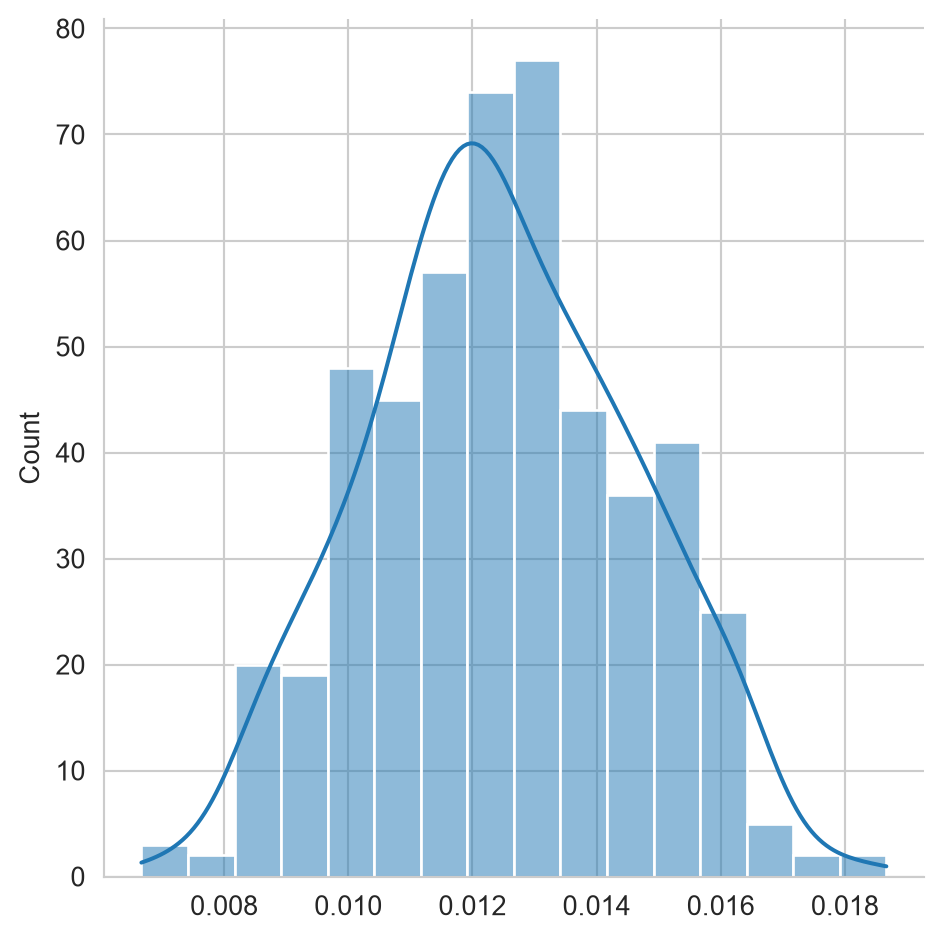
La Figura 5.4 muestra el histograma de la estimación del error en el ejemplo analizado.
5.5 Error Bayesiano
El ejemplo anterior deja una pregunta abierta, ¿por qué un modelo que conoce exactamente las distribuciones que generaron los datos (p1, p2 y p3) comete errores al clasificar? La respuesta está en que el error no depende únicamente del método utilizado para clasificar, sino también de la superposición entre las distribuciones de las clases; esta sección formaliza esta idea mediante el concepto de error bayesiano y muestra que la regla utilizada en Sección 5.3.2, es decir, seleccionar la clase con mayor probabilidad a posteriori, es la que menor error comete entre todos los clasificadores posibles.
Sea \(f: \mathcal X \rightarrow \mathcal Y\) un clasificador, es decir, una función que asigna una clase \(f(x)\) a cada entrada \(x\); por ejemplo, la variable prediccion del ejemplo anterior corresponde a \(f(x)\) evaluado en cada uno de los elementos de X. La probabilidad de que \(f\) se equivoque, condicionada a una entrada \(\mathcal X=x\), es
\[ \mathbb P(f(\mathcal X) \neq \mathcal Y \mid \mathcal X=x) = 1 - \mathbb P(\mathcal Y = f(x) \mid \mathcal X=x), \tag{5.3}\]
dado que \(f(x)\) únicamente puede tomar un valor y el complemento de acertar es equivocarse. El error del clasificador \(f\), sin condicionar a una entrada particular, se obtiene promediando sobre todas las posibles entradas, es decir, \(\mathbb P(f(\mathcal X) \neq \mathcal Y) = \mathbb E_{\mathcal X}\left[\mathbb P(f(\mathcal X) \neq \mathcal Y \mid \mathcal X)\right].\)
El clasificador utilizado en Sección 5.3.2 corresponde a la regla
\[ f^*(x) = \underset{k}{\text{arg max }} \mathbb P(\mathcal Y=k \mid \mathcal X=x), \tag{5.4}\]
conocida como la regla de Bayes, y al error que esta regla produce, \(\mathbb P(f^*(\mathcal X) \neq \mathcal Y)\), se le conoce como error bayesiano. Usando la Ecuación 5.3 en \(f^*\) se tiene que
\[ \mathbb P(f^*(\mathcal X) \neq \mathcal Y \mid \mathcal X=x) = 1 - \underset{k}{\max}\ \mathbb P(\mathcal Y=k \mid \mathcal X=x). \tag{5.5}\]
El error bayesiano no depende del algoritmo utilizado sino de qué tan traslapadas están las clases; en el ejemplo de Sección 5.3.1 el valor \(0.0123\) estimado no es producto de un método imperfecto – p1, p2 y p3 son las distribuciones exactas – sino que corresponde, salvo el error de estimación medido con se_f, al error bayesiano del problema, es decir, es un error irreducible.
Falta mostrar que \(f^*\) es, de entre todos los clasificadores posibles, el que tiene el menor error esperado. Sea \(f\) cualquier otro clasificador y, para simplificar la notación, sea \(p_k(x) = \mathbb P(\mathcal Y=k \mid \mathcal X=x)\). Por definición de máximo, para toda entrada \(x\) se cumple que
\[ p_{f(x)}(x) \leq \underset{k}{\max}\ p_k(x), \tag{5.6}\]
dado que el lado derecho es el mayor valor que puede tomar \(p_k(x)\) mientras que el lado izquierdo es solo uno de esos valores, el correspondiente a la clase \(f(x)\) que selecciona el clasificador \(f\).
El siguiente paso es multiplicar ambos lados de la Ecuación 5.6 por \(-1\), operación que invierte el sentido de la desigualdad, y después sumar \(1\) a ambos lados, lo cual no altera el sentido de la desigualdad al sumarse la misma constante en ambos lados:
\[ \begin{split} p_{f(x)}(x) &\leq \underset{k}{\max}\ p_k(x) \\ -p_{f(x)}(x) &\geq -\underset{k}{\max}\ p_k(x) \\ 1 - p_{f(x)}(x) &\geq 1 - \underset{k}{\max}\ p_k(x). \end{split} \]
Finalmente se identifica cada lado de esta última desigualdad, el lado izquierdo, \(1-p_{f(x)}(x) = 1 - \mathbb P(\mathcal Y=f(x) \mid \mathcal X=x)\), corresponde a \(\mathbb P(f(\mathcal X) \neq \mathcal Y \mid \mathcal X=x)\) por la Ecuación 5.3; el lado derecho, \(1 - \underset{k}{\max}\ p_k(x)\), corresponde a \(\mathbb P(f^*(\mathcal X) \neq \mathcal Y \mid \mathcal X=x)\) por la Ecuación 5.5. Sustituyendo ambas identidades se obtiene
\[ \mathbb P(f(\mathcal X) \neq \mathcal Y \mid \mathcal X=x) \geq \mathbb P(f^*(\mathcal X) \neq \mathcal Y \mid \mathcal X=x) \quad \text{para toda } x. \]
Como esta desigualdad se cumple para cada valor de \(x\), se preserva al tomar el valor esperado sobre \(\mathcal X\) en ambos lados, por lo tanto
\[ \mathbb P(f(\mathcal X) \neq \mathcal Y) \geq \mathbb P(f^*(\mathcal X) \neq \mathcal Y) \quad \text{para todo clasificador } f, \]
es decir, ningún clasificador puede tener un error esperado menor al de la regla de Bayes; esta propiedad se conoce como la optimalidad del clasificador Bayesiano. En la siguiente sección se retoma esta idea desde la perspectiva del riesgo, donde se observará que minimizar el riesgo bajo un costo \(0/1\) es equivalente a minimizar el error aquí definido.
5.6 Riesgo
Como es de esperarse, existen aplicaciones donde el dar un resultado equivocado tiene un mayor impacto dependiendo de la clase. Por ejemplo, en un sistema de autenticación, equivocarse dándole acceso a una persona que no tiene permisos, es mucho más grave que no dejar entrar a una persona con los privilegios adecuados.
Una manera de incorporar el costo de equivocarse en el proceso de selección de la clase es modelarlo como una función de riesgo, es decir, seleccionar la clase que tenga el menor riesgo. Para realizar este procedimiento es necesario definir \(\alpha_i\) como la acción que se toma al seleccionar la clase \(\mathcal Y=i\). Entonces el riesgo esperado por tomar la acción \(\alpha_i\) está definido por:
\[R(\alpha_i \mid x) = \sum_k \lambda_{ik} \mathbb P(\mathcal Y=k \mid \mathcal X=x),\]
donde \(\lambda_{ik}\) es el costo de tomar la acción \(i\) en la clase \(k\).
Suponiendo una función de costo \(0/1\), donde el escoger la clase correcta tiene un costo \(0\) y el equivocarse en cualquier caso tiene un costo \(1\) se define como:
\[ \lambda_{ik} = \begin{cases} 0 \text{ si } i = k\\ 1 \text{ de lo contrario} \end{cases}. \]
Usando la función de costo \(0/1\) el riesgo se define de la siguiente manera:
\[ \begin{split} R(\alpha_i \mid x) &= \sum_k \lambda_{ik} \mathbb P(\mathcal Y=k \mid \mathcal X=x) \\ &= \sum_{k\neq i} \mathbb P(\mathcal Y=k \mid \mathcal X=x) \\ &= 1 - \mathbb P(\mathcal Y_i \mid \mathcal X=x). \end{split} \]
Recordando que \(\sum_k \mathbb P(\mathcal Y=k \mid \mathcal X=x) = 1\). Por lo tanto en el caso de costo \(0/1\) se puede observar que el mínimo riesgo corresponde a la clase más probable.
5.6.1 Acción nula
En algunas ocasiones es importante diseñar un procedimiento donde la acción a tomar sea el avisar que no se puede tomar una acción de manera automática y que se requiere una intervención manual.
La primera idea podría ser incrementar el número de clases y asociar una clase a la intervención manual, sin embargo en este procedimiento estaríamos incrementando la complejidad del problema. Un procedimiento más adecuado sería incrementar el número de acciones, \(\alpha\) de tal manera que la acción \(\alpha_{K+1}\) corresponda a la intervención esperada, esto para cualquier problema de \(K\) clases.
La extensión del costo \(0/1\) para este caso estaría definida como:
\[ \lambda_{ik} = \begin{cases} 0 \text{ si } i = k\\ \lambda \text{ si } i = K + 1 \\ 1 \text{ de lo contrario} \end{cases}, \]
donde \(0 < \lambda < 1\).
Usando la definición de riesgo, el riesgo de tomar la acción \(\alpha_{K+1}\) es
\[ \begin{split} R(\alpha_{K+1} \mid x) &= \sum_k^K\lambda_{(K+1)k} \mathbb P(\mathcal Y=k \mid \mathcal X=x)\\ &= \sum_k^K \lambda \mathbb P(\mathcal Y=k \mid \mathcal X=x)\\ &= \lambda \sum_k^K \mathbb P(\mathcal Y=k \mid \mathcal X=x) = \lambda. \end{split} \]
5.7 Seleccionando la acción
Tomando en cuenta lo que hemos visto hasta el momento y usando como base el costo \(0/1\) que incluye la acción nula, se puede observar que el riesgo de seleccionar una clase está dado por \(R(\alpha_i \mid x) = 1 - \mathbb P(\mathcal Y=i \mid \mathcal X=x)\) y el riesgo de la acción nula es \(R(\alpha_{K+1} \mid x) = \lambda\).
En estas circunstancias se selecciona la clase \(\hat y\) si es la clase con la probabilidad máxima (i.e., \(\hat y = \textsf{arg max}_k \mathbb P(\mathcal Y=k \mid \mathcal X=x)\)) y además \(\mathbb P(\mathcal Y=\hat y \mid \mathcal X=x) > 1 - \lambda.\)
5.7.1 Ejemplo
El siguiente ejemplo ilustra el comportamiento de seleccionar la clase considerando que se tiene un riesgo en la acción nula. Lo primero es generar dos conjuntos de datos uno para la clase positiva y otro para la negativa, tal y como lo indica el siguiente código. p1 y p1 son distribuciones Gaussianas, los elementos generados por p1 serán asociados a la clase positiva y los generados por p2 a la clase negativa.
p1 = multivariate_normal(mean=[5, 5],
cov=[[20, -5],
[-5, 2]])
p2 = multivariate_normal(mean=[-5, 0],
cov=[[20, 5],
[5, 2]])
X1 = p1.rvs(size=1000)
X2 = p2.rvs(size=1000)
X = np.concatenate((X1, X2))
y = np.array(['P'] * 1000 + ['N'] * 1000)La Figura 5.5 muestra el conjunto de datos donde se realizará el ejemplo de seleccionar la clase considerando el riesgo.
Código
df = pd.DataFrame(X, columns=['x', 'y'])
df['Clase'] = y
fig = sns.relplot(data=df, kind='scatter', x='x',
y='y', hue='Clase')
# fig.ax.set_xlim(-20, 20)
# fig.ax.set_ylim(-20, 20)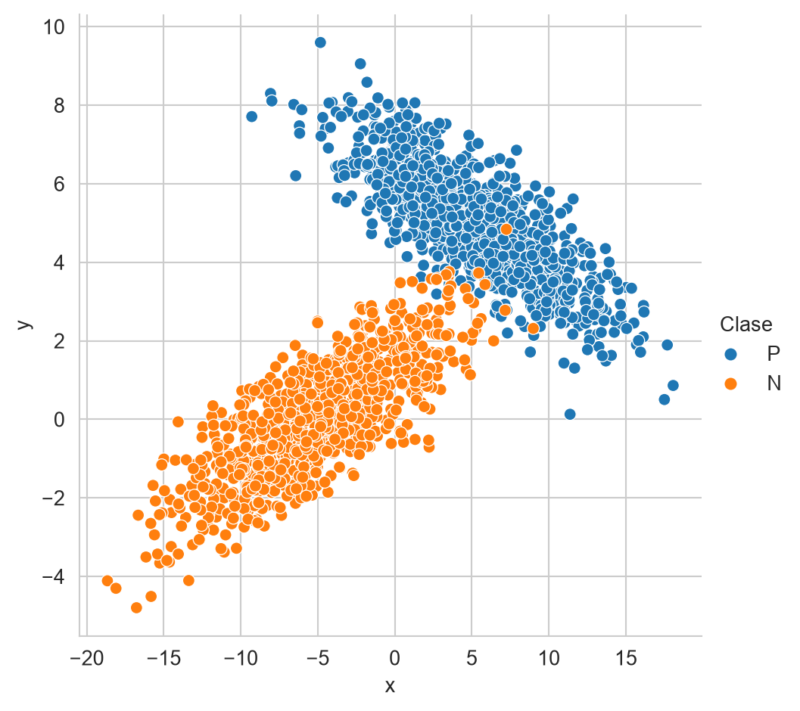
Para no introducir ningún error adicional con la estimación de parámetros, se utilizan los parámetros con los que se generaron los datos para calcular \(\mathbb P(\mathcal Y \mid \mathcal X)\) tal y como lo muestra el siguiente código.
posterior = np.c_[p1.pdf(X), p2.pdf(X)] * 1 / 2
evidencia = posterior.sum(axis=1)
posterior = posterior / np.c_[evidencia]Habiendo calculado la probabilidad de cada clase en todos los elementos de X, es momento de predecir la clase y calcular el error del proceso de clasificación.
m = {0: 'P', 1: 'N'}
hy = np.array([m[i]
for i in posterior.argmax(axis=1)])
error = (y != hy).mean()El error que se tiene corresponde a 0.0080. El siguiente paso es definir un riesgo para la clase nula, e.g. \(\lambda = 0.2\) y utilizarlo para saber cuáles son los elementos que cumplen con la condición \(\mathbb P(\mathcal Y=\hat y \mid \mathcal X=x) > 1 - \lambda.\) Estos elementos se guardan en la variable valid como muestra el siguiente código.
riesgo = 0.20
valid = posterior.max(axis=1) > 1 - riesgoUtilizando valid se puede calcular el error de aquellos elementos los cuales tienen una clase positiva o negativa. El siguiente código calcula el error.
error = (y[valid] != hy[valid]).mean()El error obtenido con los elementos válidos es \(0.0030\), se puede observar que este error es menor que el error estimado con todos los elementos. El número de elementos válidos es np.int64(1972).
Para completar el ejemplo, la Figura 5.6 muestra el conjunto de datos original, con las respectivas clases y se añade una etiqueta adicional para observar aquellos elementos que fueron incorrectamente clasificados. En la figura de la derecha se presentan solamente aquellos elementos para los cuales no se seleccionó la acción nula. Se puede observar que todavía existen errores en la predicción y que la frontera entre la clase positiva y negativa es más explícita quitando los elementos asociados a la clase nula.
Código
y_error = y.copy()
y_error[y != hy] = 'E'
df = pd.DataFrame(X, columns=['x', 'y'])
df['Clase'] = y_error
df['Conjunto'] = 'Original'
df2 = pd.DataFrame(X[valid], columns=['x', 'y'])
df2['Clase'] = y_error[valid]
df2['Conjunto'] = 'Reducido'
color=sns.color_palette()
palette = dict(P=color[0], N=color[1], E=color[3])
fig = sns.relplot(data=pd.concat((df, df2)), kind='scatter', x='x',
palette=palette,
y='y', hue='Clase', col='Conjunto')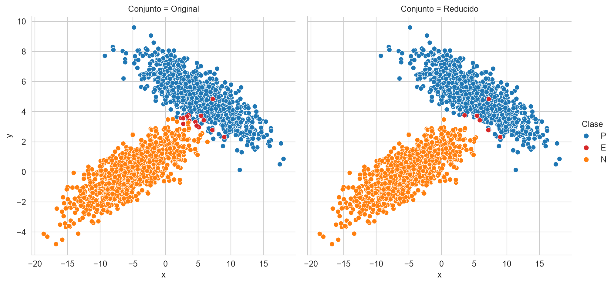
TipActividad
Utilizando los siguientes parámetros \(\mathbf \mu = [5, 5]^\intercal = \mu_1 = \mu_2\), \(\Sigma_1 = \begin{pmatrix} 20 & -5 \\ -5 & 2 \\ \end{pmatrix}\) y \(\Sigma_2 = \begin{pmatrix} 20 & -5 \\ -5 & 2 \\ \end{pmatrix}\), generar 1,000 muestras de las siguientes distribuciones \(\mathcal N_1(\mu, \Sigma_1)\) y \(\mathcal N_2(\mu, \Sigma_2)\). Asociar, a los datos generados por la primera distribución, la clase positiva y los elementos negativos corresponden a los 1,000 elementos generados mediante \(\mathcal N_2\).
La actividad corresponde en calcular el error y el número de elementos que no están asociados a la clase nula cuando \(\lambda = 0.2\). La Figura 5.7 muestra los datos generados y los datos válidos considerando el nivel de riesgo solicitado así como los errores en la predicción.
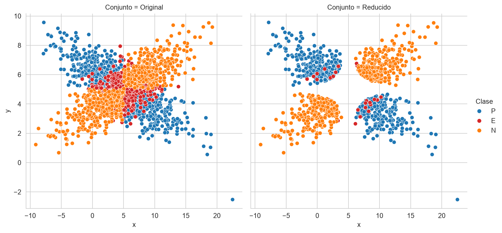
5.8 Decisiones de Política Pública: Focalización
Hasta aquí las distribuciones eran conocidas y los costos eran abstractos. En esta sección la probabilidad \(\mathbb P(\mathcal Y \mid \mathcal X)\) sale de un modelo ajustado a datos y los costos tienen un significado concreto. El problema es el de la focalización de un programa social presentado en Sección 3.9, donde con una prueba de medios sustituta se predice si un hogar es pobre a partir de características observables de la vivienda y el hogar, y con esa predicción se decide a quién entregar el apoyo. Los datos son los de Pobreza del apéndice (Sección B.1.1). Es un prediction policy problem en el sentido de Kleinberg et al. (2015), y cualquier regla de focalización comete dos tipos de error, incluir a hogares que no son pobres y excluir a hogares que sí lo son (Hanna y Olken 2018). La teoría de decisión dice cómo elegir la regla cuando esos dos errores no cuestan lo mismo.
5.8.1 Datos y probabilidades
La preparación de los datos y el modelo son los mismos que en Sección 3.9. Las variables categóricas se codifican, se separa el \(20\%\) de los hogares como conjunto de prueba de manera estratificada, se estandariza con la media y la desviación estándar del conjunto de entrenamiento y se ajusta una regresión logística con penalización \(L_1\) y C=1, es decir, con todas las variables. El modelo se describe en Sección 8.5; aquí es una caja negra cuyo método predict_proba regresa, en la segunda columna, la probabilidad \(\mathbb P(\mathcal Y=1 \mid \mathcal X=x)\) de que el hogar sea pobre. No se usa el factor de expansión porque la decisión es por hogar.
pobreza = pd.read_csv(f'{URL_DATOS}/enigh_pobreza.csv.gz')
Xp = pd.get_dummies(pobreza.drop(columns=['pobre_ingresos', 'factor']),
drop_first=True, dtype=float)
yp = pobreza['pobre_ingresos'].to_numpy()
Tp, Gp, yp_t, yp_g = train_test_split(Xp.to_numpy(), yp, test_size=0.2,
random_state=0, stratify=yp)
escala_p = StandardScaler().fit(Tp)
Tp = escala_p.transform(Tp)
Gp = escala_p.transform(Gp)
clf = LogisticRegression(penalty='l1', C=1, solver='liblinear',
max_iter=1000).fit(Tp, yp_t)
prob = clf.predict_proba(Gp)[:, 1]El conjunto de prueba tiene \(17998\) hogares, de los cuales \(32.7\%\) son pobres por ingresos. A diferencia del ejemplo de Sección 5.7, prob no es la probabilidad verdadera sino una estimación; aun así, toda la teoría anterior se aplica sustituyendo \(\mathbb P(\mathcal Y=1 \mid \mathcal X=x)\) por prob.
5.8.2 Costos de inclusión y exclusión
Para cada hogar hay dos acciones, \(\alpha_1\), incluirlo en el programa, y \(\alpha_0\), excluirlo, y dos clases, pobre (\(\mathcal Y=1\)) y no pobre (\(\mathcal Y=0\)). Acertar no tiene costo. Incluir a un hogar no pobre es un error de inclusión (una filtración) con costo \(\lambda_{\text{incl}}\), y excluir a un hogar pobre es un error de exclusión con costo \(\lambda_{\text{excl}}\). La matriz de costos es
\[ \lambda = \begin{pmatrix} \lambda_{00} & \lambda_{01} \\ \lambda_{10} & \lambda_{11} \end{pmatrix} = \begin{pmatrix} 0 & \lambda_{\text{excl}} \\ \lambda_{\text{incl}} & 0 \end{pmatrix}, \]
donde el renglón es la acción y la columna la clase. Sea \(p = \mathbb P(\mathcal Y=1 \mid \mathcal X=x)\). Con la definición de riesgo de la sección Riesgo,
\[ \begin{split} R(\alpha_1 \mid x) &= \lambda_{\text{incl}}\,(1 - p), \\ R(\alpha_0 \mid x) &= \lambda_{\text{excl}}\,p, \end{split} \]
y la acción de menor riesgo es incluir al hogar si y sólo si \(\lambda_{\text{incl}}\,(1 - p) < \lambda_{\text{excl}}\,p\), es decir,
\[ p > \frac{\lambda_{\text{incl}}}{\lambda_{\text{incl}} + \lambda_{\text{excl}}}. \tag{5.7}\]
Con el costo \(0/1\), \(\lambda_{\text{incl}} = \lambda_{\text{excl}} = 1\), el umbral es \(1/2\), que es el que usa predict y el que se usó en Sección 3.9. Si excluir a un hogar pobre es más grave que incluir a uno que no lo es, el umbral baja y el programa incluye a más hogares. El siguiente código usa los costos ilustrativos \(\lambda_{\text{incl}} = 1\) y \(\lambda_{\text{excl}} = 3\) (son unidades relativas, no pesos), calcula el umbral de la Ecuación 5.7 y compara la regla con umbral \(0.5\) contra la regla con el umbral óptimo. Para cada regla se mide la cobertura, la precisión, el número de errores de inclusión y de exclusión y el costo esperado por hogar en el conjunto de prueba, que es el promedio de \(\lambda_{\text{incl}}\) por cada inclusión indebida y \(\lambda_{\text{excl}}\) por cada exclusión indebida.
L_INCL, L_EXCL = 1, 3
umbral = L_INCL / (L_INCL + L_EXCL)
def evalua(incluir):
aciertos = (incluir & (yp_g == 1)).sum()
inclusion = int((incluir & (yp_g == 0)).sum())
exclusion = int((~incluir & (yp_g == 1)).sum())
return dict(cobertura=aciertos / (yp_g == 1).sum(),
precision=aciertos / incluir.sum(),
inclusion=inclusion, exclusion=exclusion,
costo=(L_INCL * inclusion + L_EXCL * exclusion) / len(incluir))
reglas = pd.DataFrame([evalua(prob > 0.5), evalua(prob > umbral)],
index=['Umbral 0.5', 'Umbral óptimo'])| Regla | Cobertura | Precisión | Inclusión | Exclusión | Costo esperado |
|---|---|---|---|---|---|
| Umbral 0.5 | \(0.5982\) | \(0.7220\) | \(1354\) | \(2362\) | \(0.4689\) |
| Umbral óptimo | \(0.8491\) | \(0.5646\) | \(3850\) | \(887\) | \(0.3618\) |
El umbral óptimo es \(0.2500\). La Tabla 5.1 muestra el resultado. Con el umbral \(0.5\) la cobertura es \(0.5982\), la precisión \(0.7220\), hay \(1354\) errores de inclusión y \(2362\) de exclusión, y el costo esperado es \(0.4689\). Con el umbral óptimo la cobertura sube a \(0.8491\) y la precisión baja a \(0.5646\); los errores de exclusión bajan a \(887\) a cambio de subir los de inclusión a \(3850\), y el costo esperado baja a \(0.3618\). El modelo es el mismo en ambos casos; lo único que cambió es la decisión que se toma con sus probabilidades.
La Figura 5.8 muestra el costo esperado en el conjunto de prueba para una malla de umbrales. El umbral con menor costo en la malla es \(0.28\), con un costo de \(0.3595\), y el umbral teórico es \(0.2500\). Ambos coinciden aproximadamente porque las probabilidades que estima el modelo son razonables; si no lo fueran, el umbral de la Ecuación 5.7 aplicado a prob no sería el de menor costo. Además, la curva es plana cerca del mínimo, de manera que una diferencia pequeña en el umbral cambia poco el costo.
Código
umbrales = np.linspace(0.01, 0.99, 99)
costos = [evalua(prob > u)['costo'] for u in umbrales]
fig, ax = plt.subplots(figsize=(6, 4))
ax.plot(umbrales, costos, color=PALETTE(1))
ax.axvline(umbral, color=PALETTE(5), linestyle='--', label='Umbral teórico')
ax.legend()
_ = ax.set(xlabel='Umbral', ylabel='Costo esperado por hogar')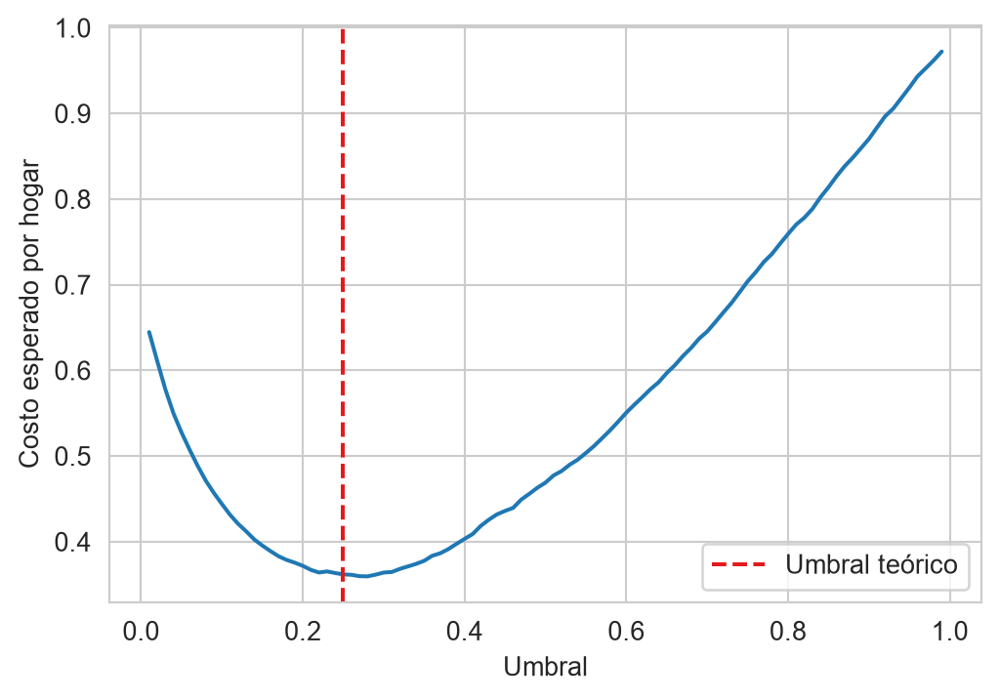
5.8.3 Cobertura contra filtraciones
Cada umbral define un programa distinto. Para quien diseña el programa, las dos cifras que importan son la cobertura (recall), la proporción de hogares pobres que el programa alcanza, y las filtraciones, \(1-\) precisión, la proporción de beneficiarios que no son pobres. La función precision_recall_curve calcula ambas para todos los umbrales posibles, y la Figura 5.9 las grafica una contra la otra, marcando las dos reglas de la Tabla 5.1.
Código
prec, cob, _ = precision_recall_curve(yp_g, prob)
fig, ax = plt.subplots(figsize=(6, 4))
ax.plot(1 - prec, cob, color=PALETTE(1))
for color, (nombre, r) in zip([PALETTE(3), PALETTE(5)], reglas.iterrows()):
ax.plot(1 - r.precision, r.cobertura, 'o', color=color, label=nombre)
ax.legend()
_ = ax.set(xlabel='Filtraciones ($1-$ precisión)', ylabel='Cobertura')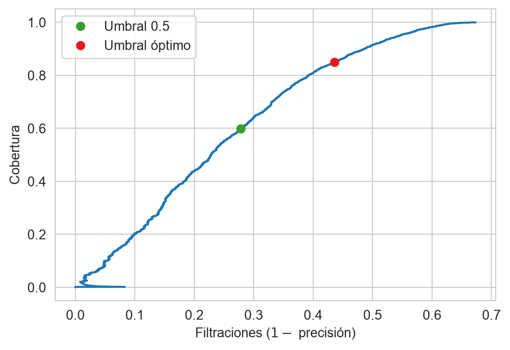
Cada punto de la curva es un programa posible, y la curva es el menú de opciones de quien diseña el programa. Bajar el umbral sube la cobertura y las filtraciones a la vez, y no hay un umbral que mejore ambas; la única manera de mover la curva hacia arriba y a la izquierda es con un mejor modelo o con mejores variables. La matriz de costos es la que elige un punto del menú. La curva ROC de Sección 2.3.8 es la misma idea con la tasa de falsos positivos (la proporción de hogares no pobres que el programa incluye) en lugar de las filtraciones; aquí se prefieren las filtraciones porque es la cifra que ve directamente quien administra el padrón de beneficiarios.
5.8.4 Restricción presupuestal
La regla de costos supone que el programa puede atender a todos los hogares que la cumplan. Con frecuencia el presupuesto fija el número de beneficiarios y entonces el umbral lo determina el cupo. Suponiendo que el programa puede atender al \(30\%\) de los hogares del conjunto de prueba, el siguiente código los ordena de mayor a menor probabilidad de ser pobres, incluye a los primeros k y calcula el umbral implícito, que es la probabilidad del último hogar incluido.
CUPO = 0.30
k = int(CUPO * len(prob))
orden = np.argsort(-prob)
incluir_cupo = np.zeros(len(prob), dtype=bool)
incluir_cupo[orden[:k]] = True
umbral_cupo = prob[orden[k - 1]]
cupo = evalua(incluir_cupo)El cupo es de \(5399\) hogares y el umbral implícito es \(0.4610\); la cobertura es \(0.6419\) y las filtraciones \(0.3010\). La regla de costos de Sección 5.8.2 incluiría a \(8842\) hogares, más de los que caben. Con un cupo fijo lo que importa es el orden de las probabilidades y no su valor, pues cualquier transformación creciente de prob selecciona a los mismos hogares. Cuando la regla de costos incluye a más hogares de los que caben, el presupuesto manda, y el costo de exclusión que se acepta de manera implícita se lee del umbral implícito despejando \(\lambda_{\text{excl}}\) de la Ecuación 5.7, \(\lambda_{\text{excl}} = \lambda_{\text{incl}}\,(1 - u)/u\), donde \(u\) es el umbral. Con \(\lambda_{\text{incl}} = 1\) el resultado es \(1.1694\); es decir, el presupuesto actúa como si excluir a un hogar pobre costara eso y no \(3\). Hacer explícita esa cifra es una manera de discutir si el presupuesto es suficiente.
5.8.5 Verificación en campo
La acción nula de Sección 5.7 tiene una lectura directa en la focalización. En lugar de decidir con el modelo, el hogar se envía a una visita domiciliaria que determina si es pobre. Suponiendo que la visita no se equivoca y que cuesta \(\lambda_{\text{ver}}\) por hogar, la tercera acción, \(\alpha_2\), tiene riesgo constante,
\[ R(\alpha_2 \mid x) = \lambda_{\text{ver}}, \]
exactamente como el riesgo \(\lambda\) de la acción nula. El hogar se verifica cuando \(\lambda_{\text{ver}} < \min\{\lambda_{\text{incl}}\,(1-p),\ \lambda_{\text{excl}}\,p\}\), es decir, cuando
\[ \frac{\lambda_{\text{ver}}}{\lambda_{\text{excl}}} < p < 1 - \frac{\lambda_{\text{ver}}}{\lambda_{\text{incl}}}; \]
por arriba de la banda se incluye y por debajo se excluye sin visita. El siguiente código usa \(\lambda_{\text{ver}} = 0.5\), la mitad del costo de una inclusión indebida, calcula la banda, la fracción de hogares que se envía a verificación y el costo esperado total, que suma el costo de las visitas al de los errores de los hogares decididos de manera automática.
L_VER = 0.5
banda = (L_VER / L_EXCL, 1 - L_VER / L_INCL)
verificar = (prob > banda[0]) & (prob < banda[1])
incluir_v = prob >= banda[1]
inclusion_v = int((incluir_v & (yp_g == 0)).sum())
exclusion_v = int((~incluir_v & ~verificar & (yp_g == 1)).sum())
costo_v = (L_INCL * inclusion_v + L_EXCL * exclusion_v
+ L_VER * verificar.sum()) / len(prob)La banda de verificación es \((0.1667, 0.5000)\), y en ella cae \(33.3\%\) de los hogares del conjunto de prueba (\(5986\) visitas). Entre los hogares decididos de manera automática hay \(1354\) errores de inclusión y \(486\) de exclusión, y el costo esperado total por hogar, con las visitas incluidas, es \(0.3225\), frente a \(0.3618\) de la regla de dos acciones de Sección 5.8.2. La Figura 5.10 muestra los tres riesgos como función de \(p\) y las regiones donde cada acción es la de menor riesgo.
Código
ps = np.linspace(0, 1, 201)
riesgos = np.c_[L_INCL * (1 - ps), L_EXCL * ps, np.full_like(ps, L_VER)]
mejor = riesgos.argmin(axis=1)
fig, ax = plt.subplots(figsize=(6, 4))
for i, nombre in enumerate(['Incluir', 'Excluir', 'Verificar']):
ax.plot(ps, riesgos[:, i], color=PALETTE(2 * i + 1), label=nombre)
ax.fill_between(ps, 0, riesgos.min(axis=1), where=mejor == i,
color=PALETTE(2 * i), alpha=0.6)
ax.legend()
_ = ax.set(xlabel='$p$', ylabel='Riesgo', ylim=(0, 1.5))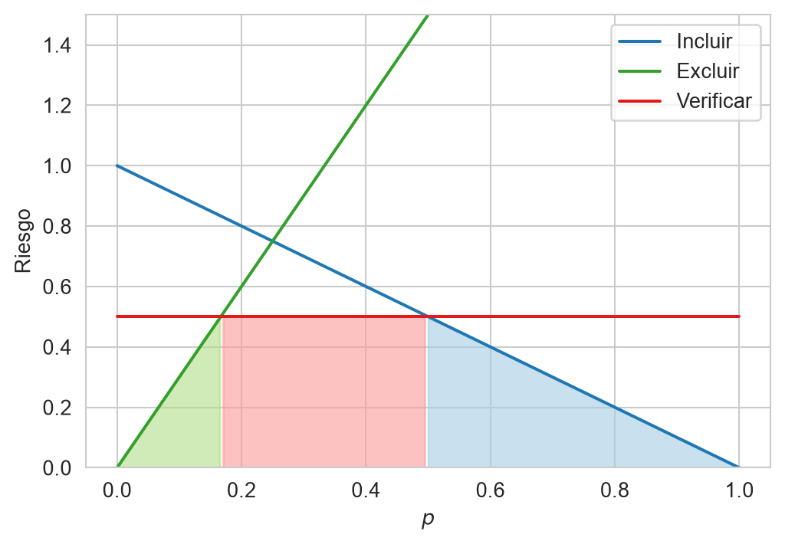
La banda de verificación es la zona de incertidumbre del modelo, donde las probabilidades no son ni suficientemente altas para incluir ni suficientemente bajas para excluir. Su anchura depende de \(\lambda_{\text{ver}}\), pues una visita más barata ensancha la banda y una más cara la angosta hasta desaparecer cuando \(\lambda_{\text{ver}} \geq \lambda_{\text{incl}}\lambda_{\text{excl}}/(\lambda_{\text{incl}} + \lambda_{\text{excl}})\). Fijarla es, entonces, una decisión de presupuesto operativo. En la práctica las visitas también se equivocan y tienen costos que dependen del lugar del hogar, lo que vuelve más estrecha la ventaja de verificar; aquí se supuso una visita perfecta para mantener la equivalencia con la acción nula.
TipActividad
- Para el problema de tu policy paper, identifica las dos decisiones (por ejemplo, intervenir o no intervenir), escribe la matriz de costos con una línea de justificación por cada costo y calcula el umbral que implica la Ecuación 5.7.
- Con el conjunto Pobreza y el modelo de Sección 5.8.1, varía el cociente \(\lambda_{\text{excl}}/\lambda_{\text{incl}}\) en \(\{1, 2, 3, 5, 10\}\), calcula en el conjunto de prueba la cobertura y las filtraciones con el umbral de la Ecuación 5.7 y grafícalas contra el cociente, como en la Figura 5.11.
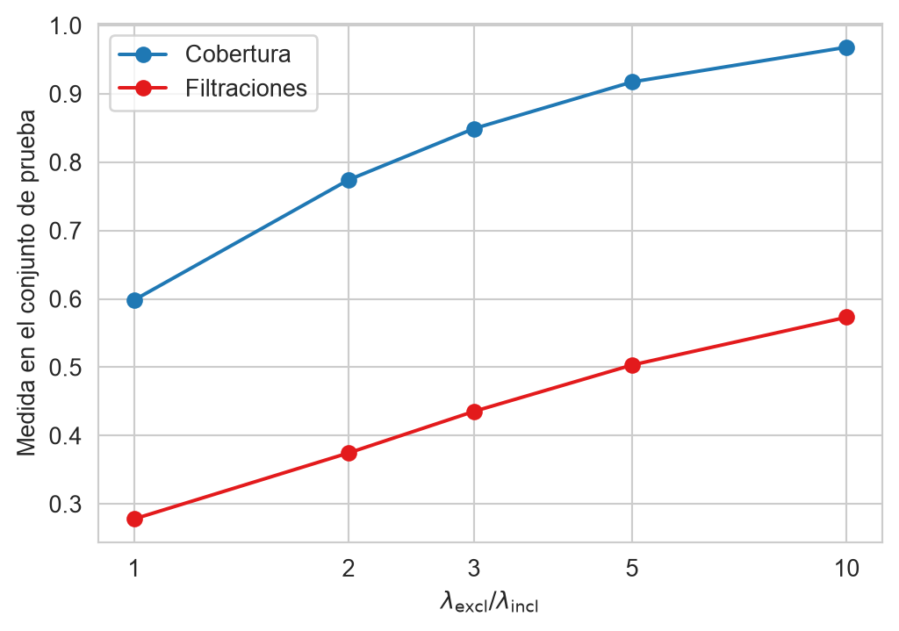
5.9 Resumen
La teoría de decisión bayesiana plantea el aprendizaje supervisado como un problema de probabilidad. El teorema de Bayes (Ecuación 5.1) permite calcular la probabilidad de cada clase dada la entrada, y seleccionar la clase más probable produce el clasificador de Bayes (Ecuación 5.4). Su error, el error bayesiano (Sección 5.5), es la cota inferior de lo que cualquier algoritmo puede lograr con esas variables. Cuando los errores no cuestan lo mismo se utiliza el riesgo, y la acción nula permite abstenerse de decidir si la incertidumbre es alta (Sección 5.7).
La sección de focalización (Sección 5.8) aplicó el riesgo a una decisión real, a qué hogares incluir en un programa social. Con dos acciones el umbral óptimo depende sólo del cociente entre el costo de inclusión y el de exclusión (Sección 5.8.2), y cada umbral es un punto de la curva de cobertura contra filtraciones (Sección 5.8.3). Cuando el cupo es fijo, el umbral lo decide el presupuesto (Sección 5.8.4), y la acción nula se convierte en la verificación en campo de los hogares sobre los que el modelo tiene más incertidumbre (Sección 5.8.5).
En este capítulo las distribuciones se tomaron como conocidas, y en un problema real hay que estimarlas a partir de los datos. Los métodos que suponen una forma para esas distribuciones y estiman sus parámetros se estudian en Capítulo 6.